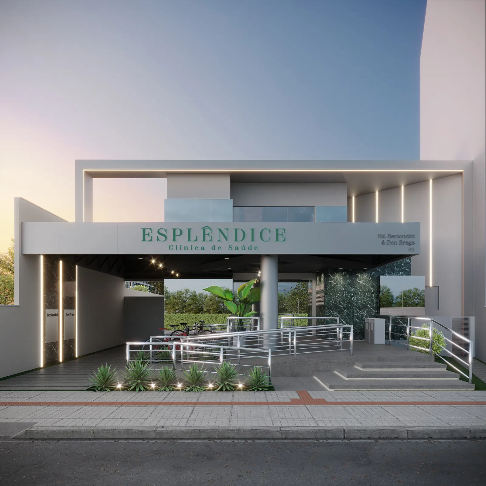

Missão
Proporcionar cuidado humanizado e de excelência, com foco em promover qualidade de vida através do cuidado à saúde.
Cardiologia · Tubarão/SC
Consultas e exames do coração com oito cardiologistas, num espaço pensado para receber você com calma e atenção.
ou ligue 48 3626-6800

A clínica
Somos uma clínica médica com foco em proporcionar atendimento de excelência e humanizado, que zele pela qualidade de vida e pelo bem-estar de cada paciente.
Proporcionar cuidado humanizado e de excelência, com foco em promover qualidade de vida através do cuidado à saúde.
Ser um modelo de referência em atendimentos resolutivos e de qualidade, sempre investindo em capacitação e atualização.
Nossos exames
Seis exames realizados na própria clínica. Escolha um para ver como ele acompanha o coração.
Registra a atividade elétrica do coração em poucos minutos, sem dor. Avalia ritmo e frequência e costuma ser o primeiro passo da avaliação cardiológica.
Realizado na clínica.
Agendar este exameCorpo clínico
Nenhum médico com esse filtro.
Convênios
Também temos Clube de Benefícios. Na dúvida sobre cobertura, fale com a recepção antes do agendamento.
Contato e localização
R. Porto Alegre, 811 — Vila Moema
Ed. Bertoncini & Don Braga
Tubarão/SC · 88705-200
Formada em Medicina pela UFSC em 1986, concluiu formação em clínica médica, cardiologia e titulação em terapia intensiva, além de mestrado em Ciências da Saúde pela UFSC.
Foi professora de medicina da Unisul e diretora técnica e cardiologista do Hospital Socimed (atual Unimed). Hoje é cardiologista e diretora técnica da Multmed / Esplêndice, onde realiza consultas e laudos de MAPA.
Formada em medicina pela Universidade Federal de Santa Catarina, atua como médica há 22 anos, 16 deles em cardiologia, com formação no Instituto de Cardiologia de Santa Catarina.
Na Esplêndice realiza consultas de cardiologia e é responsável pelo laudo do Holter, exame que monitora os batimentos para identificar arritmias.
Natural de Rio Grande (RS), formado pela FURG, atua como médico há 19 anos. Fez residência em medicina interna e cardiologia na Santa Casa de Rio Grande e em ecocardiografia na UNIFESP. Título de especialista em cardiologia pela SBC.
Serviu na Marinha do Brasil como tenente médico. Atua em Tubarão desde 2012 e, na Esplêndice, realiza consultas e exames de imagem: ecocardiograma e Doppler de carótidas e vertebrais.
Formado em medicina pela Unisul, atua como médico há 18 anos, 12 em cardiologia, com formação no Instituto de Cardiologia de Santa Catarina e especialização em medicina intensiva pela AMIB.
Professor de cardiologia na Unisul desde 2012.
Formado em medicina pela Universidade Federal do Rio Grande, especializou-se em cardiologia no Instituto de Cardiologia de Porto Alegre e atua como cardiologista há 14 anos.
Na Esplêndice realiza consultas de cardiologia, ecocardiograma e Doppler de carótida.
Formado em medicina pela Unisul, em Tubarão, fez residência em Medicina Interna no Hospital Hans Dieter Schmidt (Joinville) e em Cardiologia no Instituto de Cardiologia de Santa Catarina (São José).
Atua em atendimento ambulatorial, de emergência e UTI. Na Esplêndice realiza consultas cardiológicas.
Formado em medicina pela Unisul, atua como médico há 13 anos e especializou-se em cardiologia no Hospital Hans Dieter Schmidt (Joinville/SC).
Na Esplêndice realiza consultas cardiológicas e teste ergométrico em esteira.
Formado em medicina pela Unisul, atua como médico há 16 anos, 11 em cardiologia, com formação no Hospital São Vicente de Paulo, em Passo Fundo (RS).
Na Esplêndice realiza consultas cardiológicas e teste ergométrico em esteira.